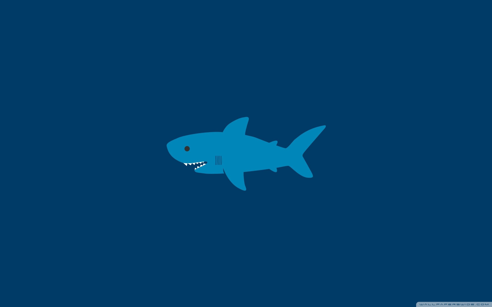
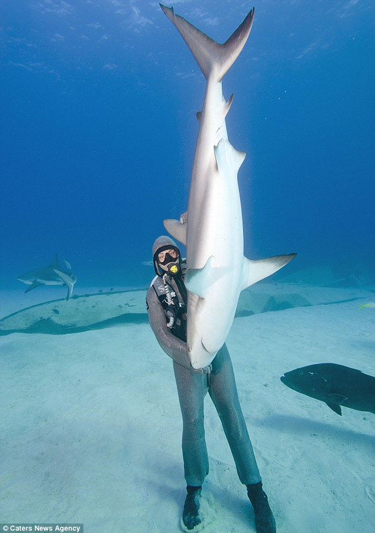
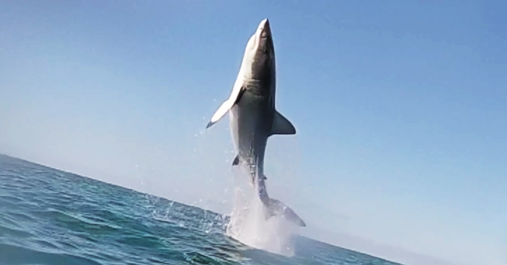

|  | ||
|  | Shark Facts Some sharks need to constantly move to stay alive Sharks do not have bones, but can still fossilize Sharks have lived for a long time, dating back to dinosaurs The Whale Shark is the largest living fish on the planet Sharks can have up to 300 or more teeth You are more likely to be killed by fireworks than a shark There are over 500 species of sharks If a shark is flipped upside down, they go into a trance state |
 |